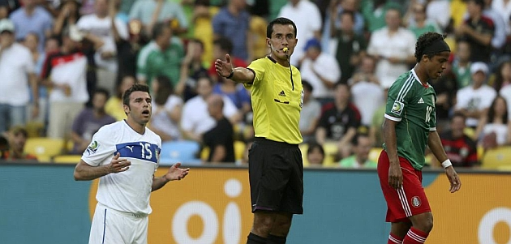

Como se mencionó anteriormente el uso de camaras ayudará bastante para dar solucion a este problema. Estas se colocarán al centro de cada mitad del campo, para tener una vista general del campo y de los jugadores en general.
Una vez ubicados los jugadores mediante un algoritmo que identifique el color de sus uniformes y el balón podremos empezar a trabajar con un programa que nos indique el momento en el que se de un fuera de lugar.
Se contemplan las excepciones a la hora de los saques de banda, asi como el concepto principal del fuera de juego: POSICIÓN + PARTICIPACIÓN.
Una vez se confirme este evento (menos de 1 segundo) se mandará una señal a los arbitros de linea para que con toda seguridad puedan marcar el fuera de lugar.
Componentes
El producto se conforma por dos cámaras de 1080 HD con lente varifocal (90° de visión), suspendida sobre el estadio de forma vertical, mediante una estructura de cables y poleas. La cual se moverá 55 cm…… La cámara seguirá la trayectoria del balón y de los jugadores, conforme a reconocimiento de color de los uniformes. Las cámaras podrán detectar el momento justo en el que se comete el fuera de lugar, una vez que la cámara detecte este hecho se mandara al árbitro, mediante comunicación via bluetooth, una notificación que hará que su decisión sea precisa.
Factibilidad
No requiere de un cambio importante de infraestructura en un estadio para su aplicación, así como que tampoco significaria un cambio importante en la dinamica de cobrar un fuera de lugar. Otra ventaja es que el costo que significa tanto la produccion e instalacion del sistema no significa mucho costo comparado con los ingresos que genera un estadio.
 Incluso peleas y debates quedarían de más pues el sistema pretende ser infalible.Es un proyecto que entra en dos vertientes, tanto en Fair Play como en Inteligencia Digital en el Futbol.
En Fair Play pues promueve un arbitraje justo para ambos equipos, donde los errores no tengan cabida para beneficiar o afectar a uno u otro equipo. La otra vertiene pues se aprovecha la inteligencia, como ya se hizo con los goles fantasma, para evitar problemas mencionados anteriormente, especificamente las camaras, el reconocimiento y la programación.